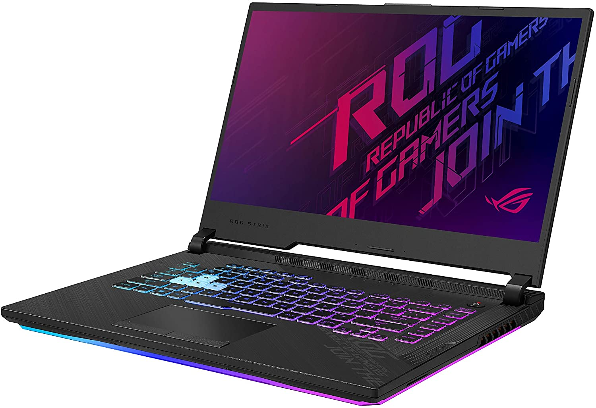

Presentación
Inspiring Innovation • Persistent Perfection
- comprometida con la innovación y la calidad,
- anualmente recibimos numerosos galardones
- por parte de numerosos medios,
- miembros de la industria e incluso gobiernos.

ASUS
ASUS surge de las últimas 4 letras de Pegasus, el caballo alado de la mitología griega, símbolo de inspiración artística y aprendizaje. ASUS personifica la fortaleza, el espíritu creativo y la pureza representada por esta majestuosa criatura, alcanzando con cada nuevo lanzamiento, nuevas cuotas de calidad e innovación.
Valores
La marca ASUS está fundamentada en cuatro valores fundamentales conocidos como el ADN ASUS los cuales incluyen: “Las 5 virtudes de ASUS: Humildad, integridad, diligencia, agilidad y valor”, “Enfoque al fundamento y los resultados”, “Innovación y estética” y “Optimización de la productividad (Lean Thinking)”. Con el fin de alcanzar la visión de llegar a ser la empresa más admirada de la nueva era digital, nuestros empleados son alentados a practicar y desarrollar sendos “genes”.
-Abraham Lincon
Productos
MyASUS: Todo lo que necesitas para mejorar la experiencia con tu notebook.
Descargalo aca!